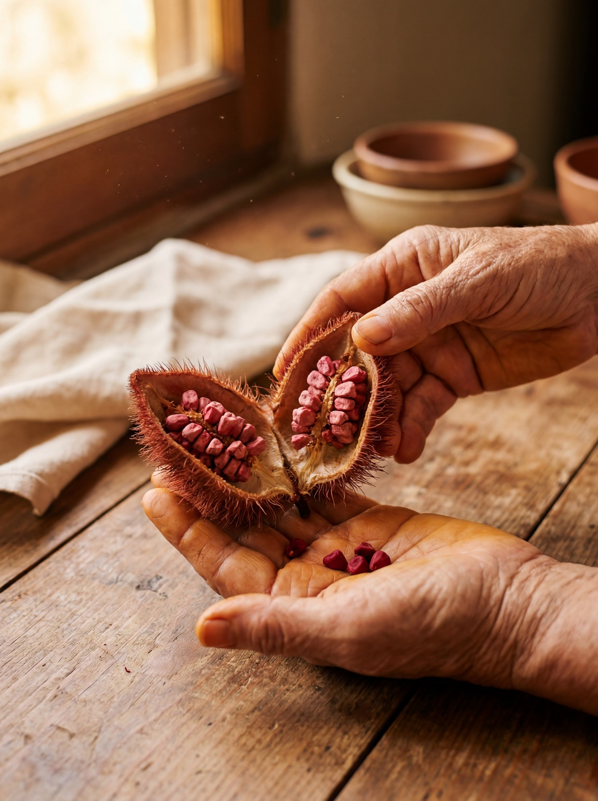

Food-memory researcher
Taste your
way home.
Achiote rebuilds the dishes your family never wrote down. Give it a sound-alike, a smell, a color, the shape of a Sunday. It hands back one small taste, so you can find out whether the memory is right.

Why Achiote exists
The fortune in your heart can't be lost or left behind. Let's find it again.
Recipes carry the people who made them. When a family crosses a border, the language can slip a generation before anyone notices, and the flavor becomes the last thing left to share. Achiote helps you find it again, and sit back down at the same table.
For the ancestors who knew it by heart, and the generations who will.
By Simón González De Cruz
The difference
A researcher, not a summarizer
Most assistants answer too soon. Hand them a memory and they hand back a recipe: a confident guess dressed up as a fact. Achiote investigates instead.
A summarizer
Guesses, then moves on
- Jumps straight to a recipe
- Treats one source like every source
- Hides what it doesn't know
- Sends you to a specialty store first
- Could've answered without reading your memory
Achiote
Investigates, then proves
- Treats your memory as evidence, not an order
- Asks 0 to 3 questions only when it must
- Weighs sources and keeps the unknowns visible
- Finds the cheapest, closest version first
- Ends with one small taste to test the memory
Under the hood
The AI is the smallest part
Most of what Achiote does isn't a model guessing. It's curated data, deterministic rules, and cited research doing the heavy lifting. The model reasons over all of it, but it starts from solid ground.
01
Curated reference data
A provenance-tracked pantry of dish families, ingredients, regional availability, and DOI-cited food science gives the system stable footing before any memory arrives.
02
Deterministic rules
Name resolution, a source-quality ladder, an evidence ledger, and quality gates handle the mechanical work. No AI needed.
Local logic03
Live web research
Cited sources fill gaps in real time: regional variations, ingredient swaps, technique cross-references the pantry hasn't seen yet.
Live research04
AI reasoning
The model reasons over everything above to rebuild the memory, and it asks better questions when the clues are thin. It's the smallest layer in the stack.
Model layerThe signature output
The Memory Receipt
Achiote doesn't end with a recipe card. It ends with a receipt: what you said, what it researched, what it inferred, what's still unknown, and the one small taste to try first. It shows the trail instead of claiming certainty.
Memory Receipt
From fragment to first taste
Five movements
Intake
Your memory becomes evidence: sounds, smells, region, ritual.
Plan
A source-first path, with what would confirm or reject it.
Research
Names, regions, techniques, and competing versions, weighed.
Reason
Food science connects flavor, texture, culture, and access.
Receipt
One small taste to try, with the unknowns kept honest.
The recipe was never written down. The memory was.
Start with a fragment: a sound, a smell, a color. Messy input is correct input.